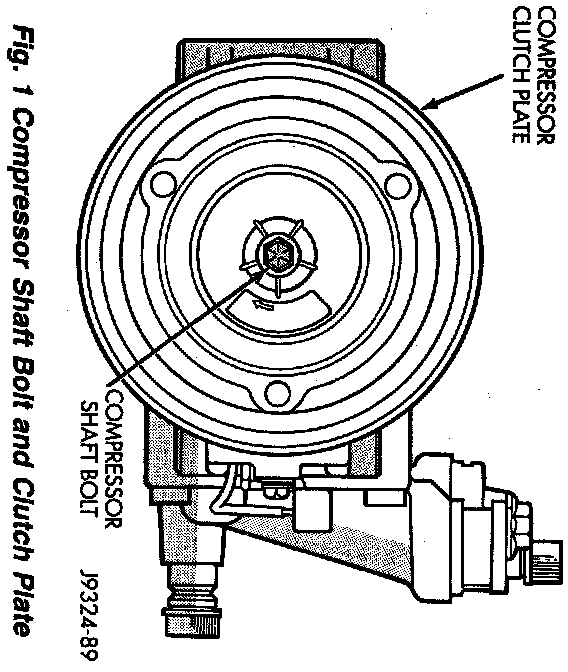
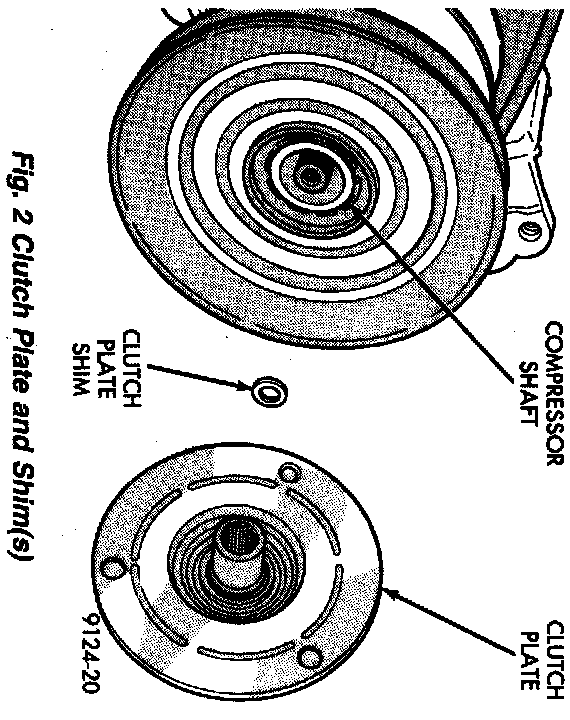
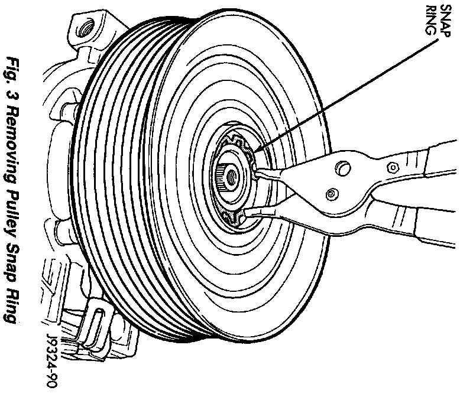
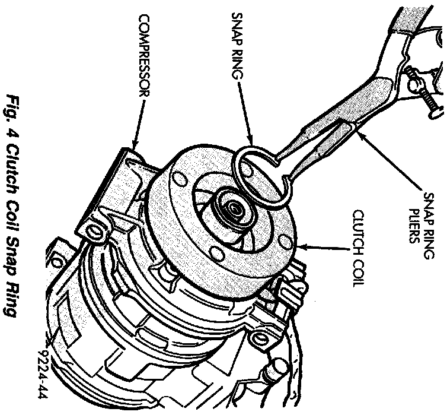
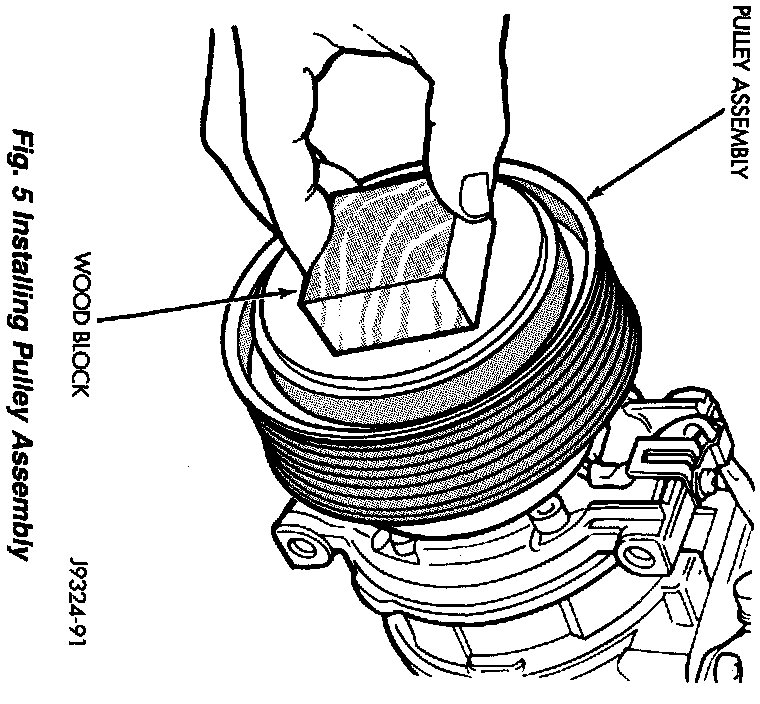

Compressor Clutch / Coil Assembly Replacement
REMOVALCompressor assembly must be removed from mounting. Refrigerant discharge is not necessary.
1. Disconnect the negative cable from the battery.
Fig.1 Compressor Shaft Bolt And Clutch Plate:

2. Remove the compressor shaft bolt. A band-type oil filter removal tool can be placed around the clutch plate to aid in bolt removal.
Fig.2 Clutch Plate And Shim(s):

3. Tap the clutch plate with a plastic hammer and remove clutch plate and shim.
CAUTION: Do not use screwdrivers between the clutch plate assembly and pulley to remove front plate. This may damage the front plate assembly.
Fig.3 Removing Pulley Snap Ring:

4. Remove pulley retaining snap ring with Snap Ring Pliers (C-4574) and slide pulley assembly off of compressor.
5. Remove coil wire clip screw and wire harness.
Fig.4 Clutch Coil Snap Ring:

6. Remove snap ring retaining field coil onto compressor housing. Slide field coil off of compressor housing.
INSPECTION
Examine frictional faces of the clutch pulley and front plate for wear. The pulley and front plate should be replaced if there is excessive wear or scoring.
The friction surfaces are oily, inspect the shaft nose area of the compressor for oil and remove the felt from the front cover. If the compressor felt is saturated with oil, the shaft seal is leaking and will have to be replaced.
Check bearing for roughness or excessive leakage of grease. Replace bearing as required.
INSTALLATION
1. Align pin in back of field coil with hole in compressor end housing and position field coil into place. Make sure that lead wires are properly routed and fasten with the wire clip retaining screw.
2. Install field coil retaining snap ring with Snap Ring Pliers (C-4574). The bevel side of the snap ring must be outward. Also both eyelets must be to the right or left of the pin on the compressor. Press snap ring to make sure it is properly seated in the groove.
CAUTION: If snap ring is not fully seated it will vibrate out, resulting in a clutch failure and severe damage to the front face of the compressor.
Fig.5 Installing Pulley Assembly:

3. Install pulley assembly to compressor. If necessary, tap gently with a block of wood on the friction surface.
CAUTION: Do not mar the pulley frictional surface.
4. Install pulley assembly retaining snap ring (bevel side outward) with Snap Ring Pliers (C-4574). Press the snap ring to make sure it is properly seated in the groove.
5. If the original front plate assembly and pulley assembly are to be reused, the old shim(s) can be used. If not, place a stack of shim(s) equal to the old shim(s) on the shaft against the shoulder.
6. Install front plate assembly onto shaft.
7. With the front plate assembly tight against the shim(s), measure the air gap between front plate and pulley face with feeler gauges. The air gap should be between 0.35 and 0.65 mm (0.014 and 0.026 in.) If proper air gap is not obtained, add or subtract shims until desired air gap is obtained.
8. Install compressor shaft bolt. Tighten bolt to 13 Nm (115 in. lbs.) torque. Shims may compress after tightening shaft nut. Check air gap in four or more places to verify if air gap is still correct. Spin pulley for final check.
9. Connect the negative cable to the battery.